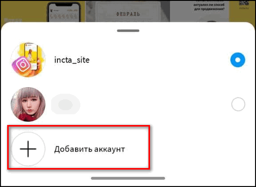
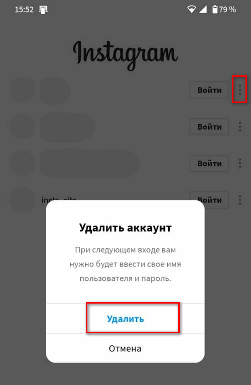
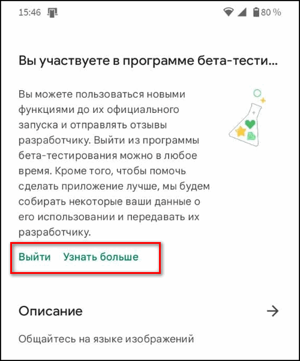
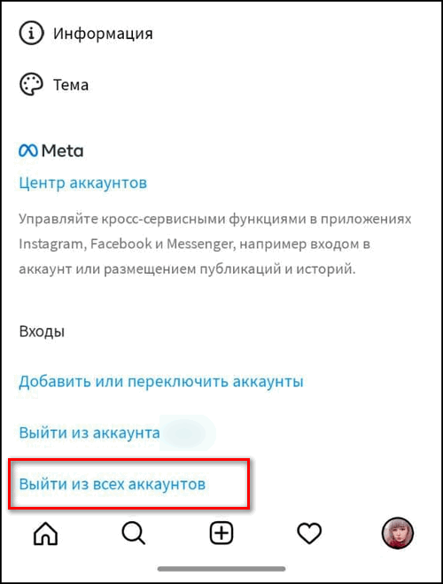
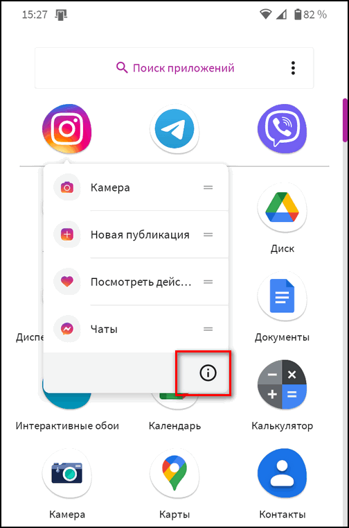
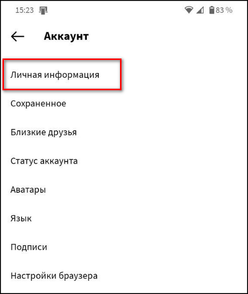
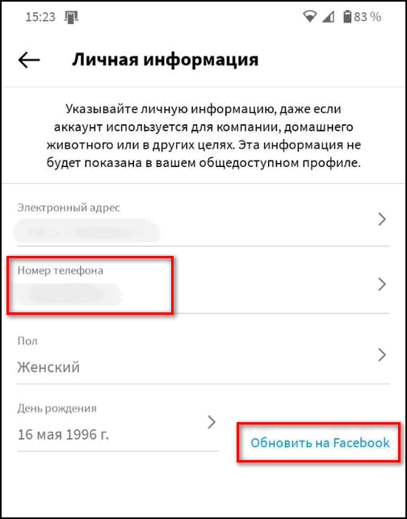

Пропали Рилс в Инстаграме: причины и способы решения

Один из вопросов пользователей: почему нет Рилс в Инстаграме*. Несмотря на то, что функция была запущена в 2021 году, даже спустя год она может отсутствовать на нескольких аккаунтах.
Пропал раздел Рилс в Инстагарме: что делать
Есть несколько причин, почему нет Рилс в Инстаграме* на Айфоне или Андроиде. И основная из них: отсутствие обновлений для операционной системы. Смартфоны на базе iOS и Android регулярно получают новые версии, в соответствие с чем могут устанавливать новые приложения. Другие причины, почему может отсутствовать раздел:
- нет обновлений самого Инстаграма*. Нужно перейти к настройкам Play Market или AppStore, чтобы установить новую версию;
- недостаточно свободного пространства на смартфоне. Что не позволяет устанавливать новую версию и соответственно, Reels отсутствует;
- региональное распределение версий. Для этого региона нет новых версий, поэтому установить их не получится;
- посещение аккаунта с разных стран. Например, в одном регионе уже получили обновления, а в другом – нет. И при авторизации с разных стран может исчезнуть или наоборот, появиться раздел;
- блокировка Инстаграма*.
Reels можно просматривать без подключения к разделу. Основная проблема в загрузке своих материалов: если раздела нет, то нельзя добавлять свои видеозаписи. При переходе во вкладку Рилс и попытке опубликовать, появится ошибка, либо пользователь будет сброшен на «Главную».
Авторизация с разных стран
Если пропали Reels в Инстаграме*, хотя ранее были, то проблема может быть в авторизации с разных стран. То есть, доступ к аккаунту есть у пользователя, где Рилс недоступен. Как решить проблему:
- Выйти из профиля в том регионе, где Reels недоступен.
- Удалить данные о входе (или попросту удалить приложение временно).
- Заходить в течение трех дней только с того региона, где доступен Reels.
Или же, временно оставить аккаунт и первый раз войти с региона, где доступен Рилс. Пользователь, у которого нет доступа к функции, не должен посещать страницу, а данные должны быть удалены.
Чтобы убрать информацию об учетной записи:
- Зайти в другой профиль – нажать сверху по символу: «вниз».

- Появится перечень доступных учетных записей – нажать: Добавить существующий.

- Рядом с профилем, который нужно удалить нажать «крестик».
- Подтвердить удаление данных.

В некоторых версиях встречается рядом с никнеймом троеточие: в выпадающем меню появится опция - «Удалить» или отменить это действие.
После обновления
После переустановки Инстаграма* могут проспать Рилс, как и после обновления к новой версии. Эта проблема связана также с региональным распределением, поэтому её можно решить двумя способами:
- установить модификация. Instander – это мод для Инстаграма*, где разблокировано повышенное качество съемки, режим «призрака» и Reels;
- воспользоваться предыдущей версией приложения.
Недостаток предыдущих версий в небольших сбоях, проблемах при загрузке Директа и необходимости обновлять Инстаграм* вручную. Но эти проблемы встречаются не всегда. Как установить предыдущую версию:
- Скачать файл по ссылке: Старая версия Instagram*
- Удалить оригинальную версию, которая уже находится на телефоне.
- Нажать по скачанному файлу «Открыть» - подтвердить установку.
- Появится уведомление на экране, что нужно дать разрешение на нелицензионные источники – подождать завершения загрузки.
Во время установки нужно подтвердить, что файл не несет угрозы. Появится уведомление с кнопкой: «Настройки», где нужно подтвердить «Неизвестные источники». Также, после обновления может быть проблема с блокировкой Instagram* в Российской Федерации. Поэтому, пользователю нужны сервисы анонимного доступа, чтобы появилась кнопка Reels в Инстаграме*:
- Зайти в Play Market или AppStore.
- Вписать в поиске.
- Скачать и установить.
Перед тем, как зайти в Инстаграм* нужно открыть приложение для анонимного доступа и выбрать страну, к которой нужно подключиться. После этого можно зайти в социальную сеть и посмотреть, доступны ли Reels.
Если функция не появилась
На устаревших устройствах Android такая ошибка встречается чаще, чем на iOS. Также причина и в регионе, давности аккаунта. Так, на страницах созданных менее года назад, функции появляется быстрее чем на тех, которые существуют более нескольких лет. Варианты, что делать:
- установить модификацию;
- подождать, пока появится новое обновление;
- воспользоваться режимом «бета-тест».
У последнего способа есть один недостаток: бета-тестирование значит, что будут установлены нестабильные версии, которые только проходят этап разработки и повторной проверки. Но в этом режиме пользователь получает все новые функции.
Воспользоваться бета-тестированием в Инстаграме*:
- Зайти в Play Market – открыть страницу Instagram*.
- Снизу под описанием: «Стать участником программы бета-тестирования».
- Вступить – подождать, пока заявка подтвердится.
- Установить новую версию приложения.

Но даже в этом случае нет гарантии, что функция будет установлена. Поэтому нужно подождать следующего обновления и воспользоваться уже им.
Маски перестали запускаться, а в Директе не появился список переписок? Посмотрите, какие способы решения проблемы мы нашли ? Сбои в Инстаграме* 2023
Пропали видео Рилс в Ленте Инстаграма*
Если в аккаунте Инстаграме* нет Рилс и также они недоступны в Ленте, значит нужно обновить приложение или повторно авторизоваться. Как выйти и войти в профиль:
- Зайти в Инстаграм* – сверху нажать по трем полоскам.

- Настройки – в конце списка: «Выйти из всех аккаунтов».
Далее, нужно принудительно завершить приложение:
- на iOS: открыть группу текущих утилит и «смахнуть» активный Инстаграм*;
- на Android: зажать по значку приложения: Дополнительные сведения – Остановить.

После нужно заново войти, ввести данные и перейти к Reels. Или же, проверить наличие новых версий в магазине контента.
Если нет функции записи
Запись Reels в Инстаграме* – это и есть полноценно работающим разделом. Если отсутствует возможность записывать видео, значит Рилс не работает. Доступен только просмотр, лайки и комментарии под видеоклипами. Но есть и другие сбои, которые возникают при попытке перейти к записи:
- приложение «выбрасывает» на Главную. Причиной может стать: камера заблокирована или используется другим приложением;
- открывается Рилс в Ленте, можно оставить комментарий. Но если пользователю ответили – он не сможет отправить повторный комментарий.
Один из способов, как сделать Reels доступным – поменять номер телефона. Но менять нужно на ту страну, где функция работает. К примеру, воспользоваться номером из США или другой европейской страны.
Как изменить номер:
- Зайти в Инстаграм* – Настройки.

- Аккаунт – Личная информация.

- Номер телефона – ввести новый.
Если к аккаунту подключен Facebook*, то данные нужно изменить и там. В разделе: «Личная информация» снизу появится кнопка «Обновить», которая перебросит на Facebook*. Получайте последние новости и помощь в нашемTelegram-канале